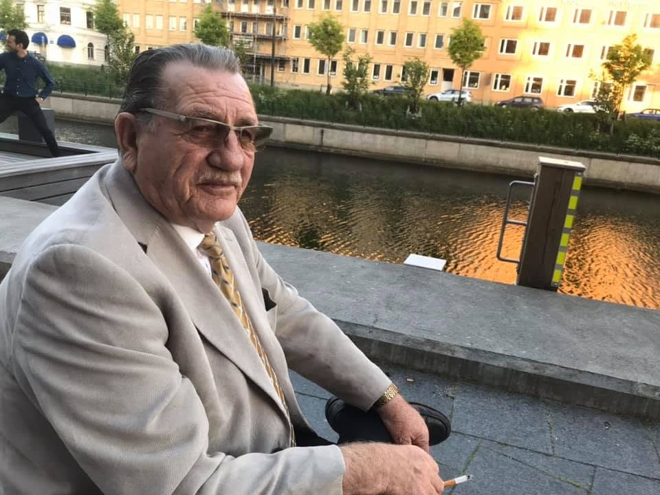

Punoi si mësues dhe profesor në Skënderaj, Lipjan dhe Prishtinë. U angazhua edhe në jetën shoqërore e kulturore, përfshirë SHKA “Drenica” dhe Kuvendin Krahinor të Kosovës.
Biblioteka personale · Prekaz / Landskrona
Rexhep
Rushit Jashari
Profesor i gjuhës dhe letërsisë shqipe, autor dhe veprimtar kulturor. Një jetë në shërbim të arsimit, kujtesës historike dhe trashëgimisë shqiptare.
Zbulo bibliotekën
Koleksioni i veprave
Librat e mi
Zgjidh një libër për ta lexuar.
Nuk u gjet asnjë libër.
Jeta dhe veprimtaria
Biografia
Rexhep (Rushit) Jashari lindi më 12 qershor 1949 në Prekaz të Poshtëm të Drenicës, në komunën e Skënderajt. Mësimet e para i mori në vendlindje dhe në Skënderaj. Në vitin 1969 diplomoi për mësues në Shkollën Normale “Hasan Prishtina” në Mitrovicë.
Në vitin 1972 diplomoi në Shkollën e Lartë Pedagogjike në Prishtinë për gjuhë dhe letërsi shqipe; studimet i vazhdoi në Universitetin e Prishtinës, ku mori titullin profesor i gjuhës dhe letërsisë shqipe.
I rritur në një familje me traditë rapsodësh, për më shumë se pesë dekada u angazhua edhe në ruajtjen e folklorit dhe kulturës shqiptare.
Vazhdoi veprimtarinë arsimore me fëmijët shqiptarë. Në vitin 1994 u vendos në Landskrona.
Me nismën e tij dhe të disa prindërve shqiptarë, filloi mësimi i gjuhës shqipe në gjimnazet e Landskronës dhe Helsingborgut.
Si kryetar i Këshillit të Emergjencës, bashkëpunoi me bashkatdhetarë në grumbullimin e ndihmave për Kosovën.
Vazhdoi të punonte me gjuhën dhe letërsinë shqipe në shkolla të Helsingborgut. Pas pensionimit iu përkushtua krijimtarisë letrare dhe shkencore.
Trashëgimia në zhvillim
Vepra në dorëshkrim
Titujt e mëposhtëm janë ende në dorëshkrim.
Tradita patriotike e katër brezave
Rapsodët e Drenicës
Gjenealogjia familjare